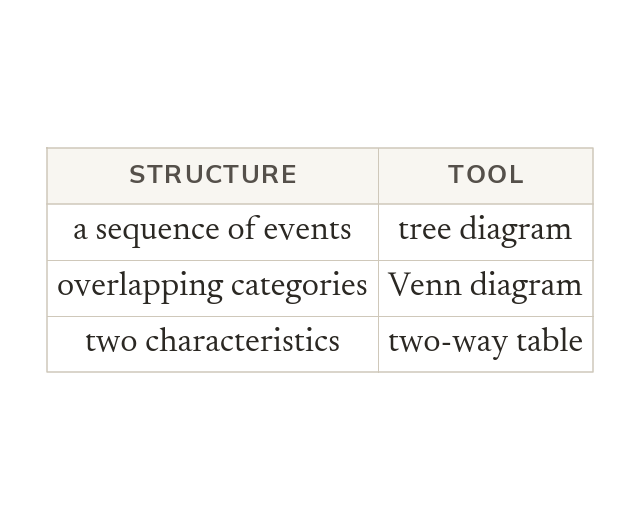

Matching tool to structure
The problem's structure decides the tool. Tree for a sequence, Venn for overlaps, table for two characteristics.
The structure of a problem decides the tool: a two-way table, a tree diagram, a Venn diagram, or direct calculation. A tree suits a sequence of events, a Venn suits overlapping categories, and a table suits two characteristics at once.